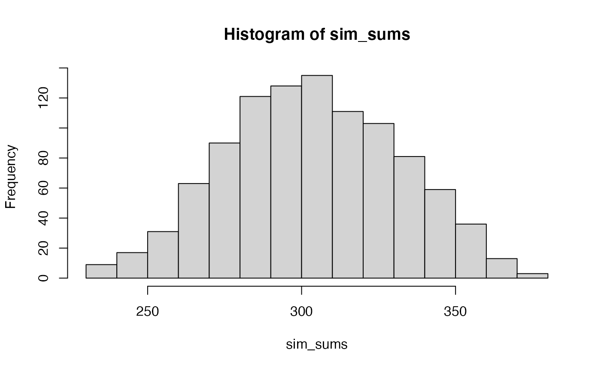
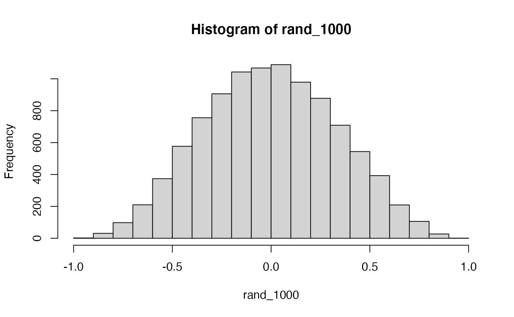
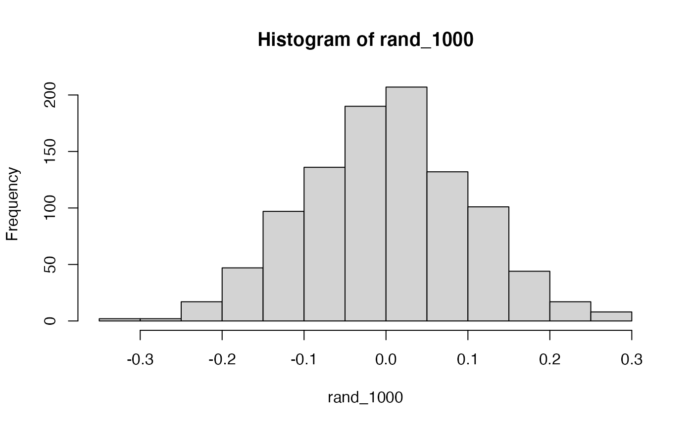
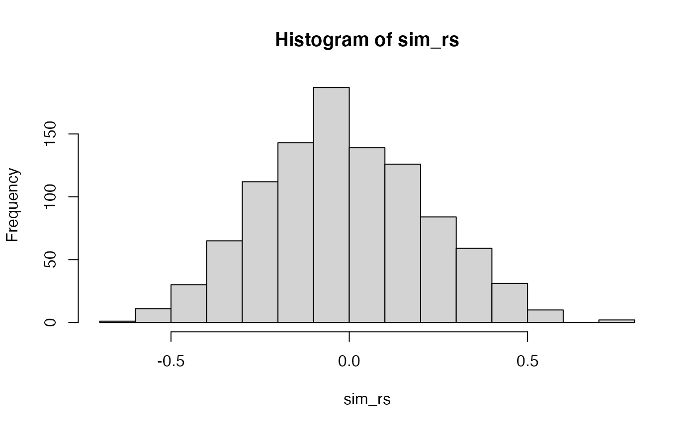

Lab 11 Correlation
Matthew J. C. Crump
12/2/2020
Lab11_Correlation.RmdOverview
This lab contains a practical section and two concept sections on correlations in R.
- Practical I: How to compute correlations in R using
cor()andcor.test() - Concepts I: Measuring correlation with a simple sum
- Concepts II: Statistical inference for correlation using permutation tests
Historical Background
Sir Francis Galton is often credited with inventing measures of correlation (Galton, 1889, 1890), which developed out of his interests in eugenics and quantifying heritability of traits from parents to offspring (Galton, 1865, 1869). Galton’s protege, Karl Pearson, is credited with popularizing and formalizing measures of correlation; for example, the correlation coefficient, \(r\), is often referred to as Pearson’s \(r\) (AKA Pearson’s correlation coefficient, and Pearson’s product-moment correlation coefficient). Pearson published his work in a brief note to the Royal Society (K. Pearson, 1895). Despite the recognition that Galton and Pearson receive, it seems that August Bravais had described correlation coefficients before both of them (Bravais, 1844). Pearson recounts the history of his development of the correlation coefficient, and discusses how he missed Bravais’ work (Karl Pearson, 1920). More recently, Stigler discussed some of the history about Galton’s account of his development of the correlation coefficient (Stigler, 1989). note: these papers are included in the class zotero group.
Finally, Lee Rodgers & Nicewander (1988) have a fantastic article on thirteen ways of conceptualizing the correlation coefficient. They also begin the article with a brief discussion of the history of the development of ideas around correlation.
Additional Reading
For additional reading and introductory background to the concept of correlation, see this chapter on correlation from Answering questions with data: https://crumplab.github.io/statistics/Correlation.html
knitr::include_graphics("imgs/corNormFourNs-1.gif")
The animated gif above shows examples of observing random correlations by chance alone. See the above link for example R code to generate gifs like this one.
Practical I: cor() and cor.test()
cor()
Base R comes with the cor() function for computing Pearson’s correlation coefficients.
?corThe cor() function can take vectors for x and y variables as inputs and return a correlation.
cor(A,B)
#> [1] 0.9246348The x or y inputs can also be matrices. In this case, the correlation between each column of A and the vector in B is computed
A <- matrix(rnorm(100,0,1),ncol=10,nrow=10)
B <- c(1,3,2,4,3,5,4,5,6,7)
cor(A,B)
#> [,1]
#> [1,] 0.1673417
#> [2,] -0.1131751
#> [3,] -0.1351992
#> [4,] -0.5110186
#> [5,] 0.5781800
#> [6,] -0.1101801
#> [7,] -0.6002278
#> [8,] 0.3641696
#> [9,] 0.1606765
#> [10,] -0.7345845If both x and y are matrices, then the correlation between each column of X and Y are computed.
A <- matrix(rnorm(25,0,1),ncol=5,nrow=5)
B <- matrix(rnorm(25,0,1),ncol=5,nrow=5)
cor(A,B)
#> [,1] [,2] [,3] [,4] [,5]
#> [1,] 0.06411369 -0.41978159 -0.5971148 -0.5940241 -0.05025842
#> [2,] -0.26076129 0.37700520 0.5733506 0.5195094 0.48479320
#> [3,] -0.41169199 0.05157738 -0.1767773 -0.6598876 -0.08220095
#> [4,] 0.26931928 -0.07626078 -0.1258230 -0.7490174 -0.29233497
#> [5,] 0.06309234 0.04617246 0.3247477 0.8734010 0.60713055cor and n-1
It’s worth noting that cor() divides by n-1, so it is a function for computing the correlation coefficient for a sample.
A <- c(1,2,3,4,5)
B <- c(5,2,3,1,4)
cor(A,B)
#> [1] -0.3
# long-form using z-score method
A_z <- (A-mean(A))/sd(A)
B_z <- (B-mean(B))/sd(B)
sum(A_z * B_z) / 4 # n-1, 5-1 = 4
#> [1] -0.3
sd_pop <- function(x){
sqrt(sum((x-mean(x))^2)/length(x))
}
# using population sd
A_z <- (A-mean(A))/sd_pop(A)
B_z <- (B-mean(B))/sd_pop(B)
sum(A_z * B_z) / 5
#> [1] -0.3
Additional cor() functionality
A review of the help file for cor() shows that it has a number of other uses. For example, the default method is to compute a Pearson correlation coefficient, but the same function could also be used to compute a kendall or spearman’s coefficient (not yet discussed in class).
Another more advanced feature is handling of missing values. For example, below the variable B contains an NA, or a missing value in the fifth position. By default, cor() will return NA in this situation.
However, the use= option can be set to handle missing data in different ways. For example, the complete.obs option removes the fifth pair altogether, and computes the correlation on the remaining pairs that have complete cases.
cor(A,B,use="complete.obs")
#> [1] -0.8315218cor.test()
The cor() function only returns correlation coefficients, however the cor.test() function can be used to return both an \(r\) value, as well as a \(p\)-value.
?cor.testFrom the help file for cor.test(), “If method is”pearson“, the test statistic is based on Pearson’s product moment correlation coefficient cor(x, y) and follows a t distribution with length(x)-2 degrees of freedom if the samples follow independent normal distributions. If there are at least 4 complete pairs of observation, an asymptotic confidence interval is given based on Fisher’s Z transform.”
A <- c(1,2,3,4,5)
B <- c(5,2,3,1,4)
cor.test(A,B)
#>
#> Pearson's product-moment correlation
#>
#> data: A and B
#> t = -0.5447, df = 3, p-value = 0.6238
#> alternative hypothesis: true correlation is not equal to 0
#> 95 percent confidence interval:
#> -0.9348345 0.7918544
#> sample estimates:
#> cor
#> -0.3cor.test() also return a list object that can be saved and accessed at a later point.
A <- c(1,2,3,4,5)
B <- c(5,2,3,1,4)
results <- cor.test(A,B)
results$statistic
#> t
#> -0.5447048
results$parameter
#> df
#> 3
results$p.value
#> [1] 0.6238377
results$estimate
#> cor
#> -0.3Using papaja to report an r-value, \(r = -.30\), 95% CI \([-.93\), \(.79]\), \(t(3) = -0.54\), \(p = .624\).
Conceptual I: The sum of products as a measure of correlation
Correlation basics
A correlation coefficient is a convenient measure of association between two variables. One convenient aspect is that the resulting value is limited to the range of -1 to 1, which can aid in interpreting the value. +1 means perfect positive correlation, 0 means no correlation, and -1 means perfect negative correlation.
In this section we use R to look at the basic math behind the correlation coefficient, as a way to focus on the more general concept.
For example, the general concept of positive correlation is that a pair of measures tends go up and down together. When a value of X is small, a paired value on Y is usually small. When a value of X is large, a paired value on Y is usually large. In other words, the variation in X matches well with the variation in Y;or, X and Y co-vary together in the same way.
A perfect positive example of this is:
X <- 1:10
Y <- 1:10
plot(X,Y)
cor(X,Y)
#> [1] 1A negative correlation is when a pair of measures tends go in opposite directions from each other. When a value of X is small, a paired value on Y is usually large. When a value of X is large, a paired value on Y is usually small. Here, X and Y again co-vary, except in opposite ways. A perfect negative example of this is:
X <- 1:10
Y <- 10:1
plot(X,Y)
cor(X,Y)
#> [1] -1The idea of zero correlation is that there isn’t an association between the paired values. If a value of X goes up or down, the paired value on Y does whatever it wants.
Everytime this code chunk runs, we randomly shuffle Y, and the resulting correlation should on average be 0 (but not everytime due to chance).
cor(X,Y)
#> [1] 0.01818182Sum of products and correlation
Pearson’s \(r\) is also sometimes called a product moment correlation coefficient. This refers to the idea that \(r\) is a sum of products that are standardized.
In this section we look at the more basic operation of summing products. For example, a sum of products has two steps:
Multiplying the values in two variables X and Y together.
X <- 1:10
Y <- 1:10
X*Y
#> [1] 1 4 9 16 25 36 49 64 81 100And then summing up the products:
sum(X*Y)
#> [1] 385The sum of products (also termed the dot product) is an un-standardized measure of correlation or association between variables X and Y. It is not standardized because the range of values that the sum of products can take depends on the values in X and Y variables.
Consider these questions, and assume that X contains the values from 1 to 10, and so does Y.
- What is the largest value that the sum of products between X and Y can take?
X <- 1:10
Y <- 1:10
sum(X*Y)
#> [1] 385Notice in this arrangement, the smallest value of X and Y (1) are paired together, the next largest value (2) are paired, and so on up until 10. This pairing creates the largest sum of products. It is also represents a perfect positive correlation.
- What is the smallest value that the sum of products between X and Y can take?
X <- 1:10
Y <- 10:1
sum(X*Y)
#> [1] 220When the numbers are arranged to produce a perfect negative correlation, the sum of the products is at it’s minimum possible value.
- If X contains only the numbers from 1 to 10 in any order, and Y does too, what kinds of sums of products can occur?

Conceptual II: Statistical inference for correlation
We will look at the concept of a null-distribution for correlation co-efficients in two different ways, first by randomly sampling values from normal distributions, and second by a permutation test.
“Random” correlations
It is totally possible to apply the Pearson’s \(r\) formula to two variables that are conceptually 100% uncorrelated and independent from each other, and still find “correlations,” or largish values of \(r\).
For example, if we randomly sample 10 values from a normal distribution into X, and another 10 values from a normal distribution in Y, then we expect on average there should be 0 correlation between X and Y. After all, we selected our values completely at random.
What happens if we do the above 10 times?
replicate(10,cor(rnorm(10,0,1),rnorm(10,0,1)))
#> [1] 0.2027425 -0.1368235 0.4454350 0.3166917 -0.6531878 -0.1174718
#> [7] 0.0110231 0.2892044 0.6959314 -0.2474890How about 1000 times?

mean(rand_1000)
#> [1] -0.008738091
max(rand_1000)
#> [1] 0.9288179
min(rand_1000)
#> [1] -0.9231289
length(rand_1000[rand_1000 > .54])/10000
#> [1] 0.0508In some sense the above simulation creates a null-distribution of sorts, that is the sampling distribution of \(r\) values that could be expected when the number of paired scores is 10, and both are drawn randomly and independently from unit normal distributions. It’s clear in this case that by chance alone it is possible to get a wide range of correlation coefficients.
Sample-size matters
Briefly, the kinds of correlations that can be produced by chance are limited by sample-size. For example, consider what happens to the range of simulated \(r\) values when the number of paired scores is increased from 10 to 100.

Permutation test
In class we discussed some sample data suggesting that the length of a word is negatively correlated with the number of meanings of a word. Example data showing a negative correlation is shown below (taken from the R workbook from the Abdi textbook).
library(ggplot2)
library(ggrepel)
Words = c('bag','buckle','on','insane','by','monastery',
'relief','slope','scoundrel','loss','holiday','pretentious',
'solid','time','gut','tarantula','generality','arise','blot','infectious')
Length=c(3,6,2,6,2,9,6,5,9,4,7,11,5,4,3,9,10,5,4,10)
Meanings=c(8,4,10,1,11,1,4,3,1,6,2,1,9,3,4,1,3,3,3,2)
all <- data.frame(Words,Length,Meanings)
knitr::kable(all)| Words | Length | Meanings |
|---|---|---|
| bag | 3 | 8 |
| buckle | 6 | 4 |
| on | 2 | 10 |
| insane | 6 | 1 |
| by | 2 | 11 |
| monastery | 9 | 1 |
| relief | 6 | 4 |
| slope | 5 | 3 |
| scoundrel | 9 | 1 |
| loss | 4 | 6 |
| holiday | 7 | 2 |
| pretentious | 11 | 1 |
| solid | 5 | 9 |
| time | 4 | 3 |
| gut | 3 | 4 |
| tarantula | 9 | 1 |
| generality | 10 | 3 |
| arise | 5 | 3 |
| blot | 4 | 3 |
| infectious | 10 | 2 |
ggplot(all,aes(x=Length,y=Meanings))+
geom_point()+
geom_text_repel(aes(label=Words))
According to the cor.test() function, the correlation in the sample data is unlikely to have been produced by chance alone.
cor.test(Length,Meanings)
#>
#> Pearson's product-moment correlation
#>
#> data: Length and Meanings
#> t = -4.5644, df = 18, p-value = 0.0002403
#> alternative hypothesis: true correlation is not equal to 0
#> 95 percent confidence interval:
#> -0.8873588 -0.4289759
#> sample estimates:
#> cor
#> -0.7324543Instead of using the cor.test() function, we can use the concept of a permutation test to construct our own null distribution. The basic idea is to imagine that the values in the Length and Meanings variables could be randomly repaired, and then a new correlation coefficient measured. If we did this procedure several thousand times we would create a null distribution representing the kinds of \(r\) values that could have been obtained by chance.

Additional Concepts
Point-by-serial correlation
Briefly, correlation coefficients can be computed between a continuous variable and a dichotomous variable. In this case, the outcome is related to a t-test. For example, in an independent sample design with two groups, the \(r\) value can be converted to a \(t\) value using:
\(t_{n-2} = r \sqrt{\frac{n-2}{1-r^2}}\)
Where n is the total number of subjects in both groups.
# independent samples t-test
A <- sample(1:10)
B <- sample(3:12)
t.test(A,B, var.equal=TRUE)
#>
#> Two Sample t-test
#>
#> data: A and B
#> t = -1.4771, df = 18, p-value = 0.1569
#> alternative hypothesis: true difference in means is not equal to 0
#> 95 percent confidence interval:
#> -4.8446619 0.8446619
#> sample estimates:
#> mean of x mean of y
#> 5.5 7.5
# X is continuous, Y is dichotomous for groups A & B
X <- c(A,B)
Y <- rep(c(0,1), each = 10)
cor.test(X,Y)
#>
#> Pearson's product-moment correlation
#>
#> data: X and Y
#> t = 1.4771, df = 18, p-value = 0.1569
#> alternative hypothesis: true correlation is not equal to 0
#> 95 percent confidence interval:
#> -0.1330870 0.6733468
#> sample estimates:
#> cor
#> 0.328798
# convert r to t
cor(X,Y) * sqrt((20-2)/(1-cor(X,Y)^2))
#> [1] 1.477098Lab 11 Generalization Assignment
Instructions
In general, labs will present a discussion of problems and issues with example code like above, and then students will be tasked with completing generalization assignments, showing that they can work with the concepts and tools independently.
Your assignment instructions are the following:
- Work inside the R project “StatsLab1” you have been using
- Create a new R Markdown document called “Lab11.Rmd”
- Use Lab11.Rmd to show your work attempting to solve the following generalization problems. Commit your work regularly so that it appears on your Github repository.
- For each problem, make a note about how much of the problem you believe you can solve independently without help. For example, if you needed to watch the help video and are unable to solve the problem on your own without copying the answers, then your note would be 0. If you are confident you can complete the problem from scratch completely on your own, your note would be 100. It is OK to have all 0s or 100s anything in between.
- Submit your github repository link for Lab 11 on blackboard.
Problems
-
An X and Y variable contain the above numbers.
A. Compute Pearson’s \(r\) and report the associated p-value using the
cor.test()function. (2 points)B. Use a permutation test to create a null-distribution, and report the p-value for getting the observed correlation or larger using your simulated null-distribution. (2 points)
-
Using the variables X and Y above, and assuming that the values could be re-ordered in any way, report the following:
A. the smallest possible sum of cross-products (1 point)
B. the largest possible sum of cross-products (1 point)